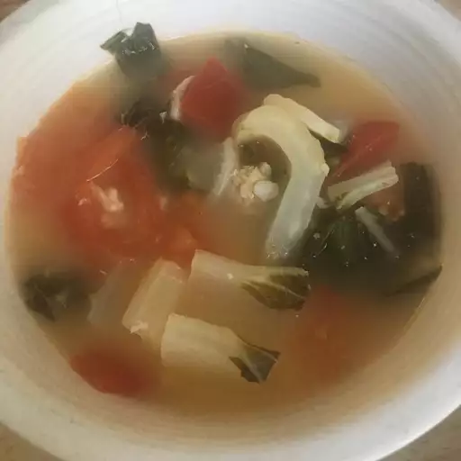

Fish Sinigang (Tilapia) -
Filipino Sour Broth Dish
A very simple and quick Filipino dish.This is a sour broth soup with tilapia fish
fillets. The flavor is sour but it actually enhances your appetite.
This is considered comfort food in my house.

- Ingredients
- ½ pound tilapia fillets, cut into chunks
- 1 small head bok choy, chopped
- 2 medium tomatoes, cut into chunks
- 1 cup thinly sliced daikon radish
- ¼ cup tamarind paste
- 3 cups water
- 2 dried red chile peppers (Optional)
- Directions
- In a medium pot, combine the tilapia, bok choy, tomatoes and radish. Stir together the tamarind paste and water; pour into the pot.
Toss in the chili peppers if using. Bring to a boil, and cook for 5 minutes, or just until the fish is cooked through. Even frozen fish will cook
in less than 10 minutes. Do not over cook or else the fish will fall apart. Ladle into bowls to serve.